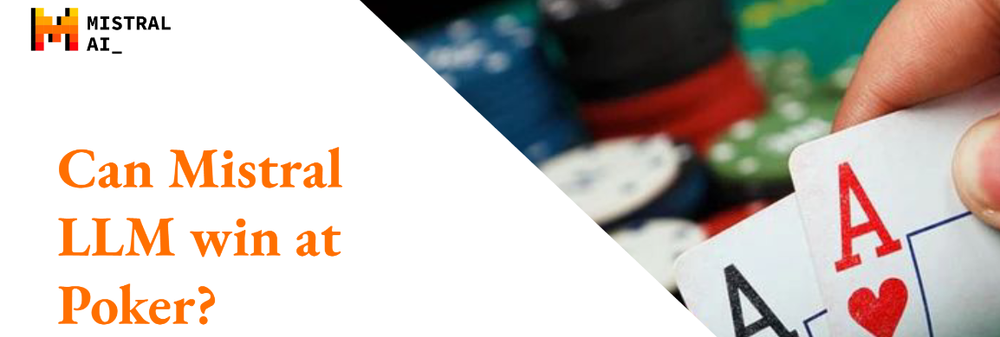
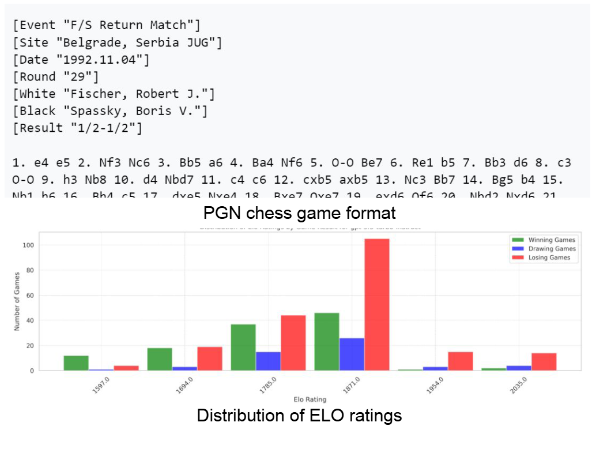
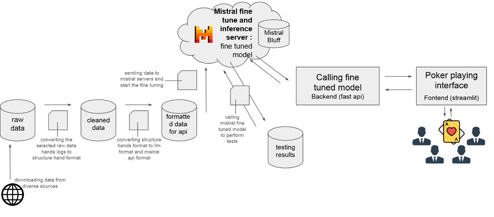
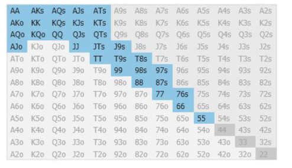
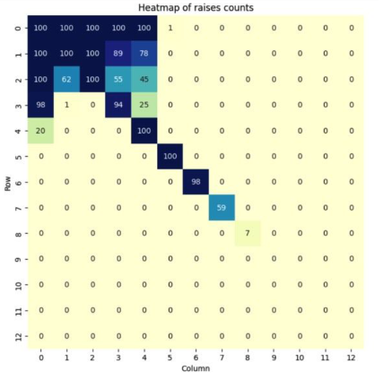
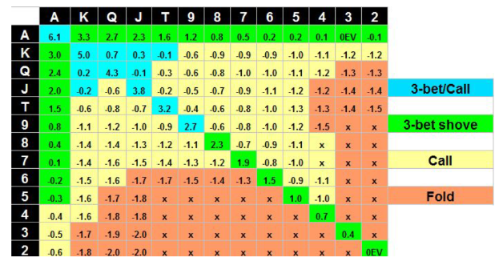
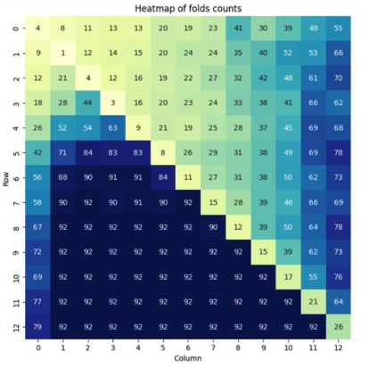

Introduction
During the 2024 Mistral AI Fine-Tuning Hackathon, I had the incredible opportunity to collaborate with my colleagues Soel Megdoud and Anatole Vakili on an ambitious project: teaching an AI language model to play poker. Inspired by recent advancements in fine-tuning large language models (LLMs) for games like chess, we wondered if similar techniques could be applied to a game as complex and nuanced as poker.
Image: Model Training on Chess
Context
Recent research has shown that fine-tuning LLMs on standardized formats, such as Portable Game Notation (PGN) for chess, can yield remarkable results. Models have learned to:
- Play exclusively valid moves without being explicitly taught the rules.
- Adapt their playing style based on the opponent’s behavior.
- Consider the entire history of previous moves when making decisions.
- Achieve impressive ELO ratings, significantly outperforming non fine-tuned models.
While these achievements are astounding, chess is a deterministic game with complete information, making it fundamentally different from poker. Poker is a multiplayer game with hidden information, non-deterministic outcomes, and psychological elements that heavily influence decision-making. Traditional AI approaches to poker often rely on reinforcement learning, which can be resource-intensive and complex to implement.
This led us to a compelling question: Can an LLM learn to play poker effectively through fine-tuning alone?
Our Approach
Image: Architecture
Data Preparation
To tackle this challenge, we decided to fine-tune the Mistral 7B model using historical poker data from a professional player's game history. Our dataset comprised over 8 million tokens, representing a wide array of gameplay situations.
We designed our training data to expose the model to diverse scenarios:
- Different Positions at the Table: Early, middle, and late positions have significant strategic differences in poker.
- Various Game Phases: Pre-flop, post-flop, turn, and river stages each require distinct decision-making strategies.
- Hand Strengths and Combinations: From weak to strong hands, suited and off-suited cards, and everything in between.
By truncating poker hands at various stages and prompting the LLM to predict the next action, we aimed to teach the model not just the rules of poker, but also the subtleties of strategic play.
Here’s an example of a prompt where the LLM is asked to act first post-flop:
Seat 7 is the button
Seat 1: BIGRAISE (174.47).
Seat 3: cracypoker (231.55).
Seat 5: bjv1105 (522.98).
Seat 6: IlxxxlI (80).
Seat 7: WalterBlack (125).
Player TheFront7 has small blind (2)
Player BIGRAISE has big blind (4)
Player BIGRAISE received a card.
Player BIGRAISE received a card.
Player cracypoker received a card.
Player cracypoker received a card.
Player bjv1105 received a card.
Player bjv1105 received a card.
Player IlxxxlI received card: [Qc]
Player IlxxxlI received card: [Jh]
Player WalterBlack received a card.
Player WalterBlack received a card.
Player cracypoker folds
Player bjv1105 folds
Player IlxxxlI calls (4)
Player WalterBlack calls (4)
Player BIGRAISE checks
*** FLOP ***: [10s Ac Ad]
Player IlxxxlI
Fine-Tuning the Model
We fine-tuned the Mistral 7B model, which is a large language model known for its versatility and efficiency. The fine-tuning process involved training the model on our prepared dataset, allowing it to learn the patterns and strategies inherent in professional poker play.
Evaluation and Results
Model Evaluation
To assess the effectiveness of our fine-tuned model, which we named MistralBluff, we evaluated it on a test set using the following metrics:
- Ratio of Legal Moves:
Ratio of Legal Moves = Number of Legal Moves / Number of Moves PlayedThis metric checks whether the model adheres to the rules of poker, such as not attempting to check when a call is required after a raise. - Accuracy:
Accuracy = Number of Moves Matching the Professional Player / Number of Moves PlayedThis measures how well the model replicates the decision-making of a professional player.
As a baseline, we also tested ChatGPT 3.5 (a non-fine-tuned model) on the same test set, adapting the prompts to clarify the task.
Results
MistralBluff demonstrated remarkable performance. Below are the confusion matrices for both MistralBluff and ChatGPT 3.5 on the test set:
MistralBluff Results:
| bets | calls | raises | allin | checks | folds | caps | |
|---|---|---|---|---|---|---|---|
| bets | 16 | 0 | 0 | 0 | 20 | 0 | 0 |
| calls | 0 | 38 | 5 | 0 | 0 | 59 | 0 |
| raises | 0 | 4 | 45 | 0 | 0 | 46 | 0 |
| allin | 0 | 0 | 0 | 2 | 1 | 6 | 0 |
| checks | 8 | 0 | 1 | 0 | 151 | 0 | 0 |
| folds | 0 | 19 | 15 | 0 | 0 | 3017 | 0 |
| caps | 0 | 0 | 0 | 0 | 0 | 1 | 1 |
ChatGPT 3.5 Results:
| bets | calls | raises | allin | checks | folds | caps | |
|---|---|---|---|---|---|---|---|
| bets | 14 | 0 | 0 | 0 | 8 | 0 | 0 |
| calls | 0 | 16 | 5 | 0 | 0 | 0 | 0 |
| raises | 0 | 3 | 45 | 0 | 0 | 0 | 0 |
| allin | 0 | 1 | 0 | 0 | 1 | 0 | 0 |
| checks | 36 | 0 | 1 | 0 | 44 | 0 | 0 |
| folds | 7 | 87 | 15 | 0 | 48 | 1 | 0 |
| caps | 0 | 0 | 0 | 0 | 0 | 0 | 0 |
MistralBluff achieved an accuracy of 94.5%, compared to 3.5% for ChatGPT. Additionally, MistralBluff had a 100% legal moves ratio, whereas ChatGPT only had 12.5%. These results indicate that fine-tuning significantly improved the model's understanding of poker rules and strategies.
Understanding Play Styles Through Poker Ranges
To delve deeper into how well MistralBluff learned professional strategies, we analyzed its opening ranges—the hands it chooses to play aggressively in various positions.
Early Positions: Under the Gun (UTG)
In early positions like UTG, players must be more conservative. Comparing MistralBluff's opening range to that of a professional player, we found a striking similarity, indicating that the model understands the need for selectivity in these positions.

Figure 1: Professional Player's UTG Opening Range

Figure 2: MistralBluff's UTG Opening Range
Both ranges are remarkably similar, indicating that MistralBluff has a good understanding of poker.
Late Positions: Big Blind (BB)
In late positions like the BB, players can afford to be more aggressive with a wider range of hands. Again, MistralBluff's opening range closely mirrored that of a professional, recognizing the increased value of suited hands and the importance of table position.

Figure 3: Professional Player's BB Opening Range

Figure 4: MistralBluff's BB Opening Range
This comparison highlights that MistralBluff recognizes the importance of table position when determining opening ranges.
Furthermore, it shows an awareness that suited hands have more value. Overall, MistralBluff’s style closely mirrors that of professional players, demonstrating its capability to adapt to the dynamics of the game.
Critiques and Future Work
While MistralBluff's performance is promising, there are areas where improvements can be made:
Bet Sizing
MistralBluff currently struggles with determining appropriate bet sizes, often failing to adjust bets relative to the pot size. Future work could involve integrating external functions or simple rules to enhance its bet-sizing capabilities.
Data Diversity
Our model was trained on data from a single professional player, which may limit its exposure to diverse playing styles and strategies. Expanding the dataset to include multiple players could provide a more well-rounded training experience.
Evaluation Metrics
Assessing a poker AI's skill level is inherently challenging due to the lack of straightforward metrics like an ELO score. Further evaluation across multiple online games and the development of more nuanced performance metrics would be beneficial.
Conclusion
Our journey into teaching an LLM to play poker has been both challenging and rewarding. Through fine-tuning Mistral 7B, we've demonstrated that it's possible for a language model to learn complex, strategic gameplay in a domain characterized by hidden information and psychological nuance.
Working alongside Soel Megdoud and Anatole Vakili has been an inspiring experience, and we're excited about the possibilities this opens up for future research in AI and game strategy. By addressing the areas for improvement, we hope to refine MistralBluff further, perhaps even to the point where it can compete with human players at a professional level.